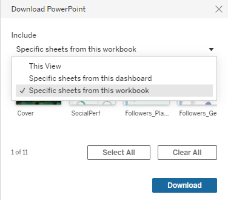

Guidelines
Check out guidelines below for downloading the dashboard
1. Click on the download button on the bottom right corner and choose the format you like

2. Select 'Specific sheets from this workbook' from the dropdown list

3. Click 'Select All' and 'Download'
4. Views adjusted with non-default parameters can be downloaded by selecting 'This View' instead